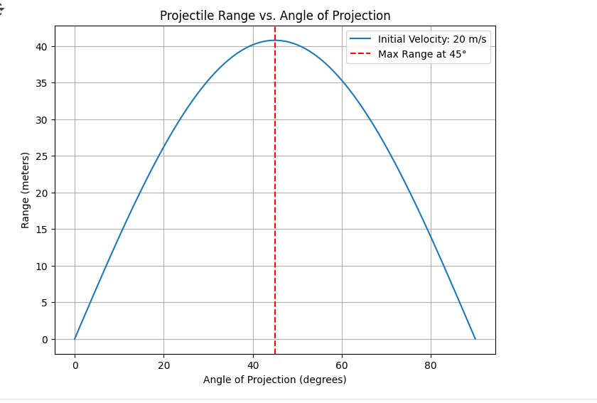

Problem 1
Investigating the Range as a Function of the Angle of Projection
1. Theoretical Foundation
Governing Equations of Motion
The motion of a projectile can be described by the following differential equations derived from Newton's second law:
-
Horizontal Motion (x-direction): [ \frac{d^2x}{dt^2} = 0 ] This implies that the horizontal velocity \( v_x \) is constant: [ v_x = v_0 \cos(\theta) ] where \( v_0 \) is the initial velocity and \( \theta \) is the angle of projection.
-
Vertical Motion (y-direction): [ \frac{d^2y}{dt^2} = -g ] where \( g \) is the acceleration due to gravity. The vertical velocity \( v_y \) is given by: [ v_y = v_0 \sin(\theta) - gt ]
The position of the projectile as a function of time \( t \) is: [ x(t) = v_0 \cos(\theta) \cdot t ] [ y(t) = v_0 \sin(\theta) \cdot t - \frac{1}{2}gt^2 ]
Family of Solutions
The solutions to these equations depend on the initial conditions: - Initial Velocity (\( v_0 \)): Affects the magnitude of the velocity components. - Angle of Projection (\( \theta \)): Determines the direction of the initial velocity. - Gravitational Acceleration (\( g \)): Influences the vertical motion.
Varying these parameters leads to a family of parabolic trajectories.
2. Analysis of the Range
Horizontal Range
The horizontal range \( R \) is the distance the projectile travels before hitting the ground. It can be derived by setting \( y(t) = 0 \) and solving for \( t \): [ 0 = v_0 \sin(\theta) \cdot t - \frac{1}{2}gt^2 ] [ t = \frac{2v_0 \sin(\theta)}{g} ] Substituting this into the equation for \( x(t) \): [ R = v_0 \cos(\theta) \cdot \frac{2v_0 \sin(\theta)}{g} = \frac{v_0^2 \sin(2\theta)}{g} ]
Dependence on Parameters
- Angle of Projection (\( \theta \)): The range is maximized when \( \theta = 45^\circ \) because \( \sin(2\theta) \) reaches its maximum value of 1.
- Initial Velocity (\( v_0 \)): The range increases with the square of the initial velocity.
- Gravitational Acceleration (\( g \)): The range decreases as \( g \) increases.
3. Practical Applications
Real-World Scenarios
- Sports: The trajectory of a soccer ball or a golf ball can be modeled using projectile motion.
- Engineering: The design of rockets and missiles involves understanding projectile motion.
- Astrophysics: The motion of celestial bodies can sometimes be approximated using projectile motion.
Extensions
- Uneven Terrain: The model can be extended to account for varying launch and landing heights.
- Air Resistance: Incorporating drag forces can make the model more realistic.
4. Implementation
Python Simulation
Below is a Python script to simulate projectile motion and visualize the range as a function of the angle of projection.
```python import numpy as np import matplotlib.pyplot as plt
Constants
g = 9.81 # gravitational acceleration (m/s^2) v0 = 30 # initial velocity (m/s) angles = np.linspace(0, 90, 100) # angles from 0 to 90 degrees
Function to calculate range
def calculate_range(v0, theta, g): theta_rad = np.deg2rad(theta) return (v0**2 * np.sin(2 * theta_rad)) / g
Calculate ranges
ranges = [calculate_range(v0, angle, g) for angle in angles]
Plotting
plt.figure(figsize=(10, 6)) plt.plot(angles, ranges, label=f'v0 = {v0} m/s') plt.xlabel('Angle of Projection (degrees)') plt.ylabel('Range (m)') plt.title('Range vs Angle of Projection') plt.legend() plt.grid(True) plt.show() 